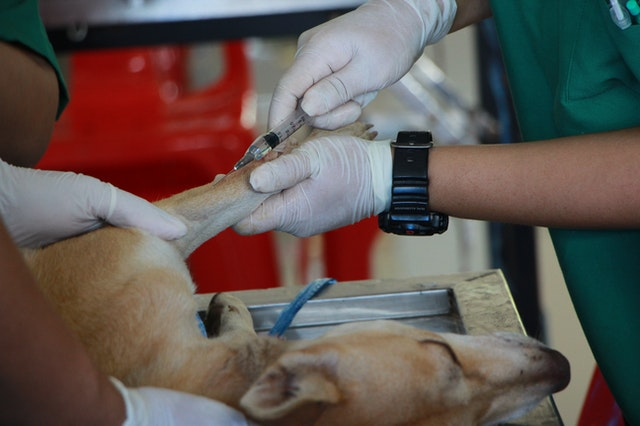
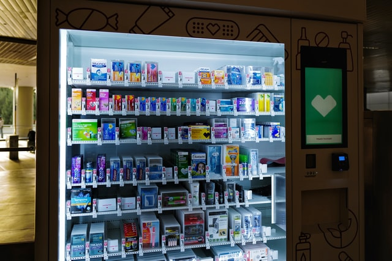

Gold veteriner, koruyucu veteriner hekimlik uygulamalarını esas alarak
hayvanlarımızın refahı ve sağlığı için en doğru yöntemlerle hizmet etme anlayışına sahip bir
veteriner kliniğidir.
Kaliteli Hizmet
Alanımızdaki gelişmeleri yakinen takip ediyor, hem büyükbaş, küçükbaş hem de
pet grubu için en uygun cihazları, eczane ürünlerini ve pet malzemelerini tedarik ediyoruz.
Memnuniyet
Gold veteriner hekimleri sevgili hayvanlarımızın ve hayvan sahiplerimizin
mutlu ve memnun kalmaları için en iyi hizmeti sunmaktadır.
HİZMETLERİMİZ
Genel muayene

Aşılar ve takibi
Doğum ve jinokolojik olaylar
Süt toplama
Anestezi ve Reanimasyon
Tıraş
Pet malzemeleri

Veteriner ilaçları - Eczane
köpek rutin sağlık programı
6-8
Haftalık
-Fiziksel muayene
-Dışkı Muayenesi ( İç parazitler yönünden )
-Parazit Tedavisi ( İç – Dış parazit yönünden )
-Puppy DP aşısı ( Gerekli görüldüğü durumlarda )
-Karma Aşı ( Distemper,Hepatitis,Parainfluenza,Parvovirus ve Leptospirosis’e karşı )
-Corona Aşısı
9-12 Haftalık
-Fiziksel Muayene
-Karma Aşı Tekrar
-Corona Aşısı Tekrar
-Bordotella’ya karşı aşılama
-Fiziksel Muayene
-Diş Muayenesi
-Dişi Köpek Kısırlaştırma ( OvarioHysterectomy ) Yapılan araştırmalar da ilk
kızgınlıktan
önce yapılan OHE operasyonu ile ilerde meme kanseri olma ihtimalini düşürdüğü
saptanmıştır.
-Erkek Köpek Kısırlaştırma ( Orchiectomy ) Erkek köpeklerde kısırlaştırmanın, bölge
savunma duyarlılığında ve saldırganlıkta azalma yine bölge belirlemede kullandığı,
idrarla iz bırakma işlemini düşürdüğü veya yok ettiği, prostat kanseri olma ihtimalini
düşürdüğü görülmüştür.
-Chip Takılması ( Derialtı )
Yetişkin Köpekler
-Karma Aşı ( Yılda bir )
-Bordotella’ya karşı aşılama ( Yılda bir )
-Kuduz Aşısı ( Yılda bir )
-Corona Aşısı ( Yılda bir )
-Dışkı muayenesi parazit yönünden ( Yılda bir )
-İç Parazitlerden koruma ve tedavi ( İki ayda bir )
-Dış Parazitlerden koruma ve tedavi ( Kışın iki ayda bir, yazın ayda bir )
-Risk varlığında ve gerekli görüldüğünde Lyme hastalığı ve mikozis profilaksisi için
aşılama yapılır.
-Fiziksel Muayene
-Diş Muayenesi
-Dişi Kedi Kısırlaştırma ( OvarioHysterectomy ) Yapılan araştırmalar da ilk kızgınlıktan
önce yapılan OHE operasyonu ile ilerde meme kanseri olma ihtimalinin düştüğü
saptanmıştır.
-Erkek Kedi Kısırlaştırma ( Orchiectomy ) Erkek kedilerde kısırlaştırmanın, bölge
savunma
duyarlılığında, saldırganlıkta azalma yine bölge belirlemede kullandığı idrarla iz
bırakma işlemini düşürdüğü veya yok ettiği görülmüştür.
-Chip Takılması ( Derialtı )
Yetişkin Kediler
-Karma Aşı ( Yılda bir )
-Leukemia Aşısı ( Yılda bir )
-Kuduz Aşısı ( Yılda bir )
-Dışkı muayenesi parazit yönünden ( Yılda bir )
-İç Parazitlerden koruma ve tedavi ( İki ayda bir )
-Dış Parazitlerden koruma ve tedavi ( Kışın iki ayda bir, yazın ayda bir )
Kedilerin insan yanındaki yeri insanlık tarihi kadar eskidir
denilebilir. Tam olarak bilinmemekle beraber İsa’dan önce 1600 yılından beri insanoğlu
kedilerle birlikte yaşamaktadır. İlk olarak eski mısırda evcilleştirildikleri
düşünülmüştür. O dönemlerde sadece ev hayvanı olarak değil tapınılacak bir nesne olarak
görülmektedirler. Bu nedenle sahipleri ile birlikte, mumyalanma gibi çeşitli metotlarla
ölümsüzleştirilmişlerdir.
Bilinen 30 çeşit kedi ırkı bulunmaktadır. detaylı incelemek için
Kediler, köpeklere oranla beslenme yönünden daha seçicidirler. Bu da
sizde zorluk hissettirmektedir. Zira sizde isteklerinin gerçekleştirilmesi amaçlı baskı
kurmak için, açlık grevine girebilecektir. Burada ilk tercihleriniz büyük önem
taşımaktadır.detaylı bilgi için
Yeni bir dünyanın kapısında iken yapılması ve uygulanması gereken bazı
adımlarınız bulunmakta. Bu uygulamalar, sizin bu dünyaya adaptasyonunuzu en kısa sürede
sağlamakla beraber olabilecek hataları ve kötü durumları elimine edecektir.
Fiziksel Muayene köpeğinizin düzenli sağlık kontrollerindeki en önemli
adımdır. Köpeğiniz problemlerini size anlatamaz. Köpeğinizde oluşabilecek anormal
bir durum örn; kalp çarpıntıları, ateşlenmeler, bölgesel ağrılar, ufak şişlikler
ancak veteriner hekiminizin yaptığı fiziksel muayeneler ile tespit edilebilir. Bu
şekilde erken fark edilen bazı durumların ilerde oluşabilecek büyük problemleri
engelleyebilir. Bunun yanı sıra veteriner hekiminiz tarafından yapılan bu düzenli
muayeneler, köpeğinizin beslenme ve bakım ile ilgili standartlarının belirlenmesinde
faydalı olmaktadır.
Köpek Gençlik Hastalığı ( Canine Distemper )
Köpek Gençlik Hastalığı ( Canine Distemper ), köpeklerin olduğu her yerde
mevcuttur. Yavru köpeklerin birincil derecede kaybını yaratan hastalıktır. İlk
işaretleri iştahsızlık, halsizliktir. İlerledikçe öksürük, ishal, gözler ve burunda
akıntı başlar. Daha sonra virüs beyin ve omurilik dokusuna yerleşir. Halsizlik,
salya akıntısı, kas spazmı ve felç görülebilir. Bu sinirsel işaretler aylar yıllar
sonra ortaya çıkabilir.
Infectious Canine Hepatitis
Infectious Canine Hepatitis lk önce karaciğeri etkiler. İlerleyen dönemlerde
şiddetli böbrek hasarına neden olur. Ölüm oranı yaklaşık %25 tir. Hastalığın
belirtileri depresyon, halsizlik, sarılık, karın ağrısıdır. Bu virüs köpekler
arasında direkt temas, idrar, dışkı ve salya ile bulaşır.
Adenovirus ve Parainfluenza
Adenovirus ve Parainfluenza solunum yolları, trake, ve akciğerlerde hastalık
oluşturan iki önemli etkendir. İlk belirtileri sert öksürme ve iştah kaybıdır. Bu
virüsler hava yolu ile bulaşır. Kuvvetli bir bağışıklık sistemi bu hastalıkların
üstesinden gelebilir. Fakat düşük bağışıklık, kötü koşulların devamı ile olaya
karışabilecek ikincil bakteriyel hastalıklar nedeni ile hastalık zatürreye
dönüşebilir. Tedavi bu haliyle zorlaşabilmektedir.
Tracheobronchitis ( Canine Cough )
Tracheobronchitis ( Canine Cough ) , köpeklerde gözlenen bulaşıcı bir solunum
yolları enfeksiyonudur. Bu hastalık Bordetella Bronchiseptica ve birkaç virüs
tarafından oluşturulur. Canine Cough çok bulaşıcıdır. Biz pansiyonlarda kalıcak,
eğitime gidicek, çoklu köpek topluluklarına girebilecek, operasyon olucak köpeklere
bu hastalığa karşı aşının yapılmasını tavsiye ediyoruz. Petshoplardan ve yetiştirici
çiftliklerinden aldığınız yeni yavrunuzda bu aşının mutlaka olması gerekmektedir.
Parvovirüs ( Kanlı İshal )
Parvovirüs ( Kanlı İshal ) , genellikle barsaklardaki hücrelere yerleşen,
kusma ve ishale neden olur. İshal sulu ve kanlı olur. Yavru ve yetişkinlerde ölüm
oranı oldukça yüksektir. İlk belirtiler ateş, depresyon ve iştah kaybıdır. İlerleyen
dönemde sıvı kaybı nedeniyle oluşan şok ve kan zehirlenmesi nedeniyle ölüm
gerçekleşir.
Kuduz ( Rabies )
Kuduz ( Rabies ) , sinir hücrelerine saldırarak beyine yerleşir. İnsan ve
diğer bütün memeliler kuduz virüsünden etkilenebilir. Hastalığın kaynağı genel
olarak vahşi hayattır. Bütün virüs kapan köpekler ölür veya itlaf edilir. Hastalık
virüs taşıyan salyanın, ısırma ve derideki çatlaklardan vücuda girişi ile oluşur.
Ülkemizde her yıl aşılamanın yapılması zorunludur.
Leptospirosis
Leptospirosis bakteriyel bir hastalıktır. Salya, sulu dışkı, idrar ile
bulaşır. Karaciğer ve böbreği etkileyerek hayati tehlikeler doğurur. İnsanlara
bulaşır.
Kalp Kurdu ( Heartworm )
Kalp Kurdu ( Heartworm ) ), her yaştan köpeği etkileyebilir. Bu paraziti
taşıyan bir sineğin köpeğinizi ısırması sonucu bu hastalığı bulaştırır. Sadece bir
kurtçuk devamlı öksürmeye, nefes alma zorluklarına, kusmaya bazı vakalarda
köpeğinizin kaybına neden olur. Yetişkin köpeklerde bu hastalığın tedavisi için
herhangi bir onaylanmış ilaç yoktur. Korunma en etkili yöntemdir. Belirli
periyotlarla uygulanan iç parazit ilaçları bu etkenin köpeğinizin gelişimini ortadan
kaldırır.
Fiziksel Muayene
Fiziksel Muayene kedinizin düzenli sağlık kontrollerindeki en önemli adımdır.
Kediniz problemlerini size anlatamaz. Kedinizde oluşabilecek anormal bir durum örn;
kalp çarpıntıları, ateşlenmeler, bölgesel ağrılar, ufak şişlikler ancak veteriner
hekiminizin yaptığı fiziksel muayeneler ile tespit edilebilir. Bu şekilde erken fark
edilen bazı durumların ilerde oluşabilecek büyük problemleri engelleyebilir. Bunun
yanı sıra veteriner hekiminiz tarafından yapılan bu düzenli muayeneler, kedinizin
beslenme ve bakım ile ilgili standartlarının belirlenmesinde faydalı olmaktadır.
Feline Leukemia Virus
Feline Leukemia Virus , kedinizde immun sistemi baskılayarak çeşitli
bakteriyal ve viral etkenlerle savaşmasını başarısız kılar. Bunun yanı sıra farklı
tipte kanserlere ve kronik hastalıklara neden olabilir. Bazı kediler bu virüse karşı
bağışıktırlar. Fakat yinede tekrarlanan bulaşmalar bu hastalığı ortaya çıkarabilir.
Eğer kediniz sürekli zayıf, halsiz ve çeşitli hastalıklar geçiriyorsa bu hastalığın
etkenine sahip olabilir.
Feline Panleukopenia
Feline Panleukopenia , kedi gençlik hastalığı olarak ta adlandırılmaktadır.
Her yaştan kediyi etkilemektedir. Aşı dışında kedinize bu hastalığın bulaşmasını
engelleyemezsiniz. FP virüsü kedinizin her organını etkileyebilir. Ateş, kusma,
iştahsızlık, ishal, dehidrasyon, zayıflık, kasılmalar, ve inkoordinasyona neden
olabilir. 1 hafta içinde kedinizin kaybına sebebiyet verebilir. Yavru kedilerin
¾’ünün yetişkin kedilerin 1/2’sinin kaybına neden olur.
Kedi solunum yolları hastalıkları
Kedi solunum yolları hastalıkları, kolayca bir kediden diğerine
geçebilmektedir. Öksürme ve hapşırma yolu ile dağılan etkenler damlacık enfeksiyonu
şeklinde hastalık oluşturur. Yavru kedilerin kolayca kaybına neden olabilecek
zatürre formu oluşmuşsa kedinizin gözleri ve burnunda akıntılar gelebilir, ateş
artabilir, halsizlik, iştahsızlık, şişerek kapanan göz kapakları ve zor solunum
oluşabilir. Bu hastalıklar özellikle Feline Rhinotracheitis Virus ve Feline Calici
Virus ‘lar tarafından oluşturulur. Rhinotracheitis hamile kedilerde düşüğe neden
olabilmektedir.
Kuduz ( Rabies )
Kuduz ( Rabies ), sinir hücrelerine saldırarak beyine yerleşir. İnsan ve diğer
bütün memeliler kuduz virüsünden etkilenebilir. Hastalığın kaynağı genel olarak
vahşi hayattır. Bütün virüs kapan kediler ölür veya itlaf edilir. Hastalık virüs
taşıyan salyanın, ısırma ve derideki çatlaklardan vücuda girişi ile oluşur.
Ülkemizde her yıl aşılamanın yapılması zorunludur.
Kalp Kurdu ( Heartworm )
Kalp Kurdu ( Heartworm ), her yaştan kediyi etkileyebilir. Köpekler gibi aynı
yoldan bu hastalığa maruz kalırlar. Bu paraziti taşıyan bir sineğin kedinizi
ısırması sonucu bu hastalığı bulaştırır. Sadece bir kurtçuk devamlı öksürmeye, nefes
alma zorluklarına, kusmaya bazı vakalarda kedinizin kaybına neden olur. Yetişkin
kedilerde bu hastalığın tedavisi için herhangi bir onaylanmış ilaç yoktur. Korunma
en etkili yöntemdir. Belirli periyotlarla uygulanan iç parazit ilaçları bu etkenin
kedinizdeki gelişimini ortadan kaldırır.
Kedi ırkı
Bilinen 30 çeşit kedi ırkı bulunmaktadır. Genel olarak karakterler birbirine benzese
de bazı ufak ayrıntıları bilmeniz, yavru kedinizin seçiminde yararlı olacaktır.
Günümüzde en popüler kedi ırkları İran, Siyam, Van, Ankara, British Shorthair,
Scotish Fold, Himalaya, Egzotic Shorthair’ dir. İran ırkı kediler sakinlikleri ile
kendilerini gösterirler. Günü uyuyarak geçirmek onlar için bulunmaz nimettir.
Himalaya benzer bir vücut yapısına sahip olmasına rağmen tüy renkleri ile İran’ dan
ayrılır. Karakteri de İran gibi sakin yönündedir. Bu iki ırkın en önemli ihtiyacı
taranmadır. Günlük taramaları mutlaka yapılmalıdır. Zira taranma ihtiyaçlarını tam
olarak karşılayamazsanız tüyler birbirine karışarak açılması imkansız bir hal
alacak, deri üzerini kapatarak hava almasını engelliyecek ve deri problemlerine
neden olacaktır. Hareket etmekteki isteksizlikleri nedeniyle beslenmelerine dikkat
edilmesi gerekmektedir. Aşırı yağlanma, kabızlık gibi sağlık problemlerine
yatkınlardır. Siyam ırkı kediler oyuncu, aşırı meraklı ve atletizme yatkınlıkları
ile tanınırlar. Evinizdeki en yüksek yerlere kolayca çıkabilirler. Atalarının
avcılık özelliklerini tamamen taşımaktadırlar. Bu nedenle geceleri aktif
haldedirler. Zira ataları geceleri avlanmakta idiler. Asil duruşu ve yumuşak tüyleri
ile dikkatleri üzerlerine toplarlar. Taranma ihtiyaçları minimum seviyededir. Kendi
dünyalarında yaşamayı daha çok severler, kucakta çabuk sıkılabilirler. British
Shorthair ve Scotish fold, siyam kadar olmasa da hareketli bir yapıya sahiptirler.
İnsanlarla arası biraz daha ılımlıdır. Kucakta o kadar çabuk sıkılmazlar. Taranma
ihtiyaçları çok değildir. Van ve Ankara kedileri tüm dünyaya bizi tanıtacak
güzellikteki kedi ırklarıdır. Avcılık karakterleri yüksek seviyededir. Bu yüzden
devamlı hareket halindedirler. Yemek saatleri dışında sahipleri ile araları
mesafelidir.
Erkek ve dişi ayrımı
Erkek ve dişi ayrımı da yavru seçiminde önemlidir. Erkek kediler yavruluk
dönemlerinde sahipleri ile çok yakın bir ilişki kurabilmektedir. İlerleyen yaşı ile
birlikte yalnız kalma isteği ortaya çıkabilir. Dişi yavrular ilk başlarda
sahiplerine çekingen davranırlar. Güvenlerini kazandıktan sonra peşinizden ömür boyu
ayrılmayacaklardır. Bunların yanında ileriye dönük düşünmeniz gereken bir hususta
ufaklıklarının ortalama 6-9 aylıkta iken kazanacakları cinsiyet özellikleridir. Dişi
kediler ortalama 6 ayda 1 çiftleşme isteği duydukları bir döneme girmektedirler. Bu
döneme kızgınlık dönemi denilmektedir. Yine aynı dönemde dişilerin salgıladıkları
kokular nedeniyle erkek kedilerde bu çiftleşme isteği duymaktadırlar. Kızgınlık
dönemi dişi kedilerde ortalama 7 gün sürer. İlk kızgınlık dönemi 20 güne çıkabilir.
Bu dönemde dişi kediler huzursuzdurlar. Yerlerde yuvarlanır devamlı miyavlarlar.
Uykusuz geceler geçirebilirsiniz. Bu dönemlerde dışarı çıkmak için yüksekten atlama,
açık kapılardan kaçma gibi problemlerde karşılaştığımız problemlerdir. Erkek
kediler, dişi kedilerin kızgınlık döneminde salgıladıkları bu kokuları alarak cam
kenarlarından ayrılmaz hale gelebilirler. Ve varlıklarını, alanlarını belirtmek
amacıyla tuvaletleri dışında ev içinde çeşitli yerlere idrar yapıp koku
bırakabilirler. Kısırlaştırma ile bu sorunlar aşılmaktadır. Ama ilerde yeni
yavrularımız olsun diyorsanız bu hususları bilmenizde fayda vardır.
Mama ve su kabı
Mama ve su kabı, temizlenmesi kolay ve ters dönmeyecek kadar ağır olmalıdır.
Paslanmaz çelikten çift gözlü metal kaplar en idealidir. Mama konmadan önce kapların
yıkanması gerekir. Su kabında her zaman taze temiz su bulunmalıdır.
Kedi tuvaleti ve kumu
Kedi tuvaleti ve kumu kedi bakımında önemli bir ihtiyaçtır. Kediler dışarı çıkmadan
da bu malzemeler ile ihtiyaçlarını ev içinde giderebilecektir. Tuvaletin boyutları
erişkin olduğu zamanlarda da kullanabileceği genişlikte ve kumu eşelerken dışarı
dökemeyeceği yükseklikte olmalıdır. Bu tuvaletin içine gazete parçaları, talaşta
koyabilirsiniz ama ticari amaçlı hijyenik kedi kumları daha idealdir. Biraz pahalı
olabilir ama hijyen,kokunun ortadan kaldırılması, kullanım kolaylığı yönünden size
büyük avantajlar sağlayacaktır. Kumun üzerindeki pislikleri almak içinde bir kum
küreği temin etmeniz gerekmektedir. Böylece günlük olarak kumun temizliğini
yapabilirsiniz. Haftalık olarak kumun komple değiştirilmesi sağlık açısından
gereklidir. Bu değişim esnasında eldiven kullanmanız ve işlem sonunda bol sabunlu su
ile ellerinizi yıkamanız sağlığınız için gereklidir. Bu değişimde tuvaleti de
çamaşır suyu eklenmiş su ile yıkamanız faydalı olur. Açık havada kurutmak
kullandığınız deterjanın kokusunu ortadan kaldırması için gereklidir. Ağır
deterjanların kokusu kedinizi tuvaletten uzak tutar veya burun kanallarında tahrişe
neden olabilir. Kedi tuvaletleri sağlığınız açısından büyük önem taşımaktadır. Bu
konuyla ilgili Veteriner Hekiminizden mutlaka bilgi alın.
Yatak
Yatak, yavru kedinizin, saklanıp kendini güvende hissedeceği bir alan yönü ile
düşünüldüğünde kapalı tarzda olması daha kullanışlıdır. Kediler yattıkları yerin
temiz olmasına dikkat ederler bu yüzden yıkanabilir yumuşak yapıdaki materyallerin
kullanılmış olması gerekmektedir. İlk gün içine girmezse hemen üzülmeyin zamanla
kendisi için en ugun yerin orası olduğunu mutlaka benimseyecektir.
Tırmalama tahtası
Tırmalama tahtası, kedinizin egzersiz ihtiyacını karşılamak ( Gerinme, tırmalama,
tırmanma vb. ) tırnaklarındaki ölü deriyi temizlemek, hem de kaşınmak için
kullanacağı bir malzemedir. Gerinme ihtiyacı kedilerin içgüdüsel bir davranışıdır.
Bu nedenle ev eşyalarının yerine kendini bu malzemeye alıştırması çok faydalı
olacaktır.
Boyun tasması
Boyun tasması, kediler için çok gerekli değildir fakat üzerinde zil taşıyan tasmalar
yavrunuzun hareketlerini takipte ve o boyutla girdiği kuytu köşelerden
çıkarabilmenizde işinize yaramaktadır.
Tarama araçları
Tarama araçları, uzun tüylü ırklar için en gerekli malzemelerden biridir. Ve yavruluk
döneminde bu işlemi rutin bir hal aldırırsanız ilerleyen yaşlarında normal bir
durummuş gibi davranacak sizde rahat edeceksiniz. Tarakların uçları küt olmalıdır ve
deriye masaj yapar gibi yavaş yavaş taranmalıdır.
Taşıma çantası
Taşıma çantası, yapacağınız yolculuklarda kediniz için olmazsa olmazlardandır.
Veteriner Hekim muayenelerine giderken, tatil yolunda vb ziyaretlerde araç içinde
kendini güvende hissedebileceği bir yerdir.
mamalar
Yani ev yemekleri ile beslenmesine başlayan bir yavru kedi ilerde kuru mamayı
kesinlikle reddecektir. Konserve mama ile başlanan bir beslenme programı diğer yemek
türlerini istememesine neden olacaktır. Kuru mama ile beslemenin diğer metotlara
göre çok miktarda iyi yanı bulunmaktadır. Bunların başında en önemlisi sağlık
açısından iyi olmasıdır. Tabi bu iyi düşüncelerin hepsi iyi kalitedeki kuru mamalar
içindir. Genel olarak mamalar 3 grupta toplanmaktadır. Profesyonel Mamalar
Market Mamaları
Veteriner Hekim Mamaları Tüm dünyada Veteriner Hekimler profesyonel mamaları
tercih etmektedir. Bunun sebebi tabi ki sağlıktır. Zira profesyonel mamalar
yavru/yetişkin kedilerin tüm ihtiyaçlarını dengeli bir şekilde ihtiva etmektedir. Ve
uzun yıllar süren bilimsel çalışmalar sonucunda ortaya çıkarılmışlardır.
İçeriklerinde ileriki yaşlarda sağlık durumlarını etkileyecek kimyasal maddeleri
ihtiva etmemesidir. Market mamaları profesyonel mamalara ziyade daha
ekonomiktirler. Buda içeriklerindeki besin miktarlarının düşürüldüğünün
göstergesidir. Bu nedenle kedinizin eksik beslenmesine neden olacaktır. İçindeki
besin maddelerinin eksikliği nedeniyle ortaya çıkacak tat kaybı içinde firmalar bazı
kimyasal maddelerle bu eksikliği ortadan kaldırırlar. Bu kimyasal maddelerin
zararlarını Veteriner Hekiminizin hasta portföyünden görebilirsiniz. Veteriner
Hekim Mamaları sağlık problemlerinin çözümünde yardımcı olması için tavsiye edilen,
tedavi edici ve koruyucu özellikteki mamalardır. Yalnız Veteriner Hekim tarafından
önerilir ve temini sağlanır
Irk Seçimi
En başta yapılacak işlem uzman kişiler tarafından alacağınız ırk bilgileridir.
Aileniz ve sizin yaşam standartlarınıza , düşünce yapınıza uygun ırkın seçimi
ileriye dönük en temel işlemdir. Çünkü çok miktardaki köpek ırkı ve bunların ayrı
ayrı karakterleri bulunmaktadır. Örn. Bir Alman Çoban Köpeği ile Golden Retriever
ırkı köpek aynı karakterde değildir. Bu karakterlerin bilinmemesi sonucu her yıl
yüzlerce köpek aileleri ile aralarındaki bağlantıyı kuramadıkları için sokaklara,
barınaklara veyahut imkan bulunursa başka bir aileye verilmektedir. Böyle bir durum
köpeğiniz için yıkıcı olacaktır. Bu tür olumsuzlukların önüne geçe bilmek için köpek
almadan önce mutlaka yakın civarınızdaki Veteriner Hekimlere ırk hakkındaki
bilgileri almak için başvurun. Veteriner Hekimler bu konuda her türlü bilgiyi
sizinle paylaşacaktır.
Yavru Alımı
Irk seçimini yaptıktan sonra eğer bir aile köpeğinin yavrularını alacaksanız,
yavruların mutlaka anne sütünü 45 gün süreyle almalarını sağlayınız. Daha erken
dönemdeki yavruların anneden ayrılması hem gelişimlerini hem de çevre şartlarına
dirençlerini önemli oranda düşürmektedir.
Pet Shop veya yetiştirici çiftliklerinden alınan yavru köpeklerde göstereceğiniz
özen çok daha fazladır. Gittiğiniz yerde seçtiğiniz yavru ile ilgili temel bilgileri
işletmenin Veteriner Hekiminden yüz yüze almanız daha doğrudur. Burada dikkat
edilecek hususlar yavrunun en az 45 günlük olması gerektiği, bir adet parvo (kanlı
ishal) ve distemper (gençlik hastalığı)’a karşı aşının yapılmış olduğu. İç ve dış
parazitlere karşı bir ilacın tatbik edildiği mutlaka görülmelidir. En garantili yol
alınacak yavrunun satış işlemleri gerçekleşmeden önce bir Veteriner Kliniğe
götürülerek rutin kontrollerinin yapılması ondan sonra satışın
gerçekleştirilmesidir. Zira çok sayıda ve çeşitli yerlerden gelen bu yavruların
hastalık taşıma riskleri diğer yavrulara göre çok fazladır.
Bakım İçin Gerekli Malzemeler
Kulübe, bahçenizde kalacak yavrular için en önemli ihtiyaçtır. Onlar için hem
kendini güvende hissedebileceği bir sığınak hem de soğuk havalarda sıcak bir yuva
olacaktır. Kulübe seçiminde dikkat edilecek hususları Veteriner Hekiminizden
öğrenebilirsiniz.
Tasma ve kayış, köpeğinizi güvenli olarak dolaştırmanız için gerekli
araçlardır. Yine tasma üzerine takılan kolyelerde yavrunuzun kimlik bilgileri,
sizlerin adres ve telefon bilgileri taşınabilir.
Mama ve su kabı, paslanmaz çelikten kolay temizlenebilir olması hijyenik
açıdan önemlidir.
Tarak ve fırça, uzun tüylü ırk köpeklerin günlük, orta ve kısa tüylü ırk
köpekler için haftalık tarama yapılması gereklidir. Tarama işlemi ile hem deriye
masaj yapılmış olur hem de karışan tüylerin açılarak derinin hava alması sağlanır.
Oyuncaklar, yavru köpeklerde buluna çiğneme alışkanlığının giderilmesi için
en iyi yoldur. Eğitim amaçlıda kullanılabilirler.
Yavru köpeğinizle ilgili her konuda Veteriner Hekiminize danışmanızı tavsiye
ediyoruz.
Yavru Köpeği Eve Getirme
Yavru köpeğinizi sütten kesildikten sonra yani yaklaşık 6-7 haftalık iken evinize
alabilirsiniz. 7 haftalık bir yavru hem kuru mama yiyebilecek kadar büyük hem de
sizinle dostluk kurabilecek kadar küçüktür. Yavru köpeğinizi hafta sonu almanız daha
uygundur. Bu şekilde 2 tam gün boyunca onunla zaman geçirmiş olursunuz. Hem de bu
boş iki gününüz içinde veteriner hekim kontrolleri için bir süre yaratabilirsiniz.
Yavru Köpeklerin Evdeki İlk Günü
Yavru köpekler bebeklere benzer. Onlar gibi hareketli ve meraklıdırlar. Bu nedenle
onları evinize getirmeden önce ev ortamını ona uygun şekilde düzenlemeniz
gerekmektedir. Küçük olduklarını, sizin gözünüzden kaçabilecek dar ve kuytu
köşelerin tehlikeler barındırabileceğini unutmayınız.
Köpeğiniz için camları ve kapıları kapatılmış bir oda ayarlayın. Camları kapatmak
istemiyorsanız sineklik benzeri bir koruma koyabilirsiniz.
Yavru köpekler çevreyi tanımak amacı ile etrafta devamlı dolaşacaklar ve yaramazlık
yapacaklardır. Bu nedenle onları dışarıda ve içerde başıboş bırakmayın.
Yavru köpeğinizi balkonlardan, pencere kenarlarından, yüksek tezgahlardan uzak
tutun.
Deterjan, çamaşır suyu, boya, tiner, kemirgen zehirleri, antifriz gibi maddeleri
yavru köpeğinizin ulaşamayacağı yüksek raflara veya dolaplara saklayın.
Zehirli ev bitkilerini kaldırmanız veyahut erişemeyeceği bir yüksekliğe kaldırmanız
gerekmektedir.
Klozetin kapağını kapalı tutun.
Bulunduğu alandaki elektrik kablolarını prizden çekin, kaldırın veya kaplayın.
Böylece bunları çiğneyerek kendisine zarar vermesini engellemiş olursunuz.
Yavru köpeğinizin altına elektrikli battaniye koymayın.
Tüm ilaçları yavru köpeğinizin ulaşabileceği yerlerden uzak tutun. Hiçbir zaman
veteriner hekimi onayı olmadan köpeğinize ilaç vermeyin.
Dikiş gereçlerini, çivi gibi küçük metalleri ortadan kaldırın.
Yavru köpeğinizin boynuna kurdele takmayın, bir yere bağlamayın. Bir yere takılarak
veya dolanarak kendini nefessiz bırakabilir yada kemirip çiğneyerek ciddi problemler
doğurabilir.
Yavru ve Yetişkin Köpeğin Beslenmesi
Yavru köpeğinizin gelişimi için ilk 1 yıl çok önemlidir. Küçük ırk köpekler
gelişimlerini 1 yılda, orta ve büyük ırk köpekler 1,5 – 2 yılda gelişimlerini tam
olarak sağlamaktadırlar. Bu süreler sonunda yetişkin kategorisine girmektedirler.
Yavru köpekler gelişimleri için yetişkin köpeklere göre 2-3 kat daha fazla besin
maddesine, kaloriye ihtiyaç duyarlar. Bunun yanında bazı vitamin ve mineraller de
gelişme üzerine oldukça etkilidir. Yetişkin ve yaşlı köpeklerin, gelişimden ziyade
beslenme kaynaklı hastalıklardan korunma amaçlı beslenmeleri önem kazanmaktadır.
Genel olarak veteriner hekimler beslenme amaçlı olarak bu bahsettiğimiz maddelerin
dengeli kombinasyonunun sağlandığı kuru mamaları tercih etmektedirler. Çünkü evde
hazırlanan yemeklerde belli bir düzen oluşturmak ve içerdiği besin maddelerinin,
vitaminlerin, minerallerin dengesini sağlamak çok zordur. Buda gelişim üzerinde
olumsuz etkiler bırakmaktadır.
Kuru mamalar genel olarak 3 grup altında toplanmaktadır. Profesyonel seri kuru mamalar
Market mamaları
Veteriner hekim mamaları
Profesyonel seri kuru mamalar, tüm dünyada veteriner hekimlerin güvenle
önerebilecekleri mamalardır. Çok çeşitli bilimsel araştırmalar sonucunda ortaya
konmuş, yavru ve yetişkin köpeklerin tüm ihtiyaçlarının dengeli bir şekilde
sağlanabildiği mamalardır. Yavru köpeklerde hem fiziksel hem de mental olarak
maksimum gelişimi sağlayabilecek mamalardır.
Market mamaları, ekonomik mamalar olarak da adlandırılmaktadır. Profesyonel mamalara
oranla ortalama %50-70 oranda düşük fiyattadırlar. Fakat içerikler yönünden de aynı
şekilde olması nedeniyle yavru veya yetişkin köpeklerin ihtiyaçlarını tam anlamıyla
karşılayamazlar. İçerdikleri bazı maddeler nedeniylede ileriye dönük hastalık
oluşumlarını tetiklemektedirler. Özellikle karaciğer ve böbreklerde problemler
oluşturabilmektedirler.
Veteriner Hekim mamaları, profesyonel firmaların veteriner hekimler tarafından
geliştirdiği ve sadece veteriner hekim tarafından önerilebilecek tedavi ve korunma
diyetleridir.
Veteriner hekimler, köpeğinize yaptığı rutin muayenelerde bu mamaların hangisinin,
ne miktarlarda, ne sıklıkla kullanılacağını sizlere açıklar. Sizler de mama
üzerlerindeki etiketlerden içerikleri ve kullanım miktarlarını öğrenebilirsiniz.
Fakat veteriner hekimin köpeğinizin ihtiyaçlarını rutin muayenelerde yapacağı
gözlemlerle belirlemesi ve buna göre bir besleme düzeni oluşturması çok daha
sağlıklıdır.